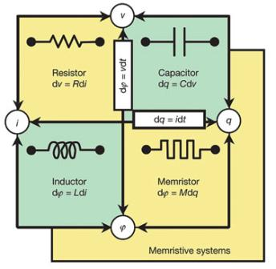

Memristors are the fourth elementary passive electric component (apart from resistor, capacitor and inductor). They were predicted in 1971 by Chua, and experimentally demonstrated in 2008 by HP labs. The main property of Memristors is that they change their resistance as function of amount and direction of charge passing through them, and the resistance is non-volatile (see the Wikipedia article here).
During my undergraduate studies I worked on two research projects related to Memristors.
Memristors are usually considered memory elements (due to their non-volatile varying resistance). In this work we explored ways to implement logic circuits with Memristors. We explored different ways to implement logic using IMPLY gates and MRL gates, and suggested a new method called MAGIC. As part of our work we implemented 8-bit full adder with each method and analyzed the trade-offs in terms of performance, complexity, power, area, CMOS compatibility and more.
In this project we used Verilog to implement a new architecture that uses Memristors in order to speed up multi-threaded processes. One challenge in multi-threaded machines is to decide which thread should run and when, in order to maximize the utilization of the CPU pipeline. A known approach to this problem is called Switch on Event (SoE), where a thread is replaced whenever it gets stuck (an event) – usually a long call for memory (such as cache miss) or long floating point calculation; then the stuck instruction continues to run but frees the main pipeline for a different thread. During this operation the pipeline is flushed, since there are not enough registers to store the status of all threads in all pipeline stages. This is exactly what we wanted to change. Memristors can be implemented as memory cells on top of the CPU (higher metal layers), so that they provide near large memory. In our work we defined a micro-architecture that implements SoE with registers for each stage in the pipeline and for each thread (the registers for the non-active threads are implemented as Memristors). We implemented this micro-architecture in Verilog and evaluated the speedup.